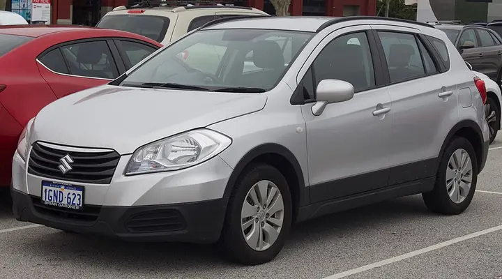
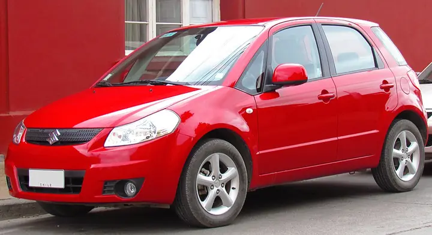

Suzuki SX4
Third generation (JYB; 2021) · 2021–present
Abstract
This generation of the Suzuki SX4 was built 2021–present in Hungary: Esztergom (Magyar Suzuki). Body styles: 5-door SUV. Layout: Front-engine, front-wheel-drive or four-wheel-drive "AllGrip". Designed by Cristiano Zanot and Yūta Horiuchi.

_1X7A7276.jpg){kind=link}
1Specifications
| Production | 2021–present |
|---|---|
| Assembly | Hungary: Esztergom (Magyar Suzuki) |
| Designer | Cristiano Zanot and Yūta Horiuchi |
| Body style | 5-door SUV |
| Layout | Front-engine, front-wheel-drive or four-wheel-drive "AllGrip" |
| Platform | Suzuki Global C platform |
| Engine | Petrol:1.4 L K14C Boosterjet turbo I4Petrol Hybrid:1.4 L K14D Boosterjet turbo I4 MHEV1.5 L K15C Dualjet I4 HEV |
| Electric motor | HEV: PB03A AC synchronous Motor Generator Unit (MGU)MHEV: WA06B DC synchronous Integrated Starter Generator (ISG) |
| Transmission | 6-speed manual6-speed automatic6-speed AMT |
| Battery | Lithium-ion |
| Wheelbase | 2600 mm |
| Length | 4300 mm |
| Width | 1785 mm |
| Height | 1585 mm |
| Weight | 1235-1330 kg |
| Also called | Suzuki S-Cross |
| Related | Suzuki Grand Vitara (2022)Suzuki VictorisSuzuki Vitara (LY)Suzuki Vitara Brezza/Brezza |
| Successor | Suzuki Across (Mexico) |
2Previous generations

_GL_wagon_(2018-08-06)_01.jpg){kind=link}


3Generation by generation
Length +4% from the first to the last
GY 20054,115 mm
JY 20134,300 mm
JYB 20214,300 mm
Weight +6% from the first to the last
GY 20051,170 kg
JY 20131,090 kg
JYB 20211,235 kg